geom_parttree() is a simple wrapper around parttree() that
takes a tree model object and then converts into an amenable data frame
that ggplot2 knows how to plot. Please note that ggplot2 is not a hard
dependency of parttree and must thus be installed separately on the
user's system before calling geom_parttree.
Usage
geom_parttree(
mapping = NULL,
data = NULL,
stat = "identity",
position = "identity",
linejoin = "mitre",
na.rm = FALSE,
show.legend = NA,
inherit.aes = TRUE,
flip = FALSE,
...
)Arguments
- mapping
Set of aesthetic mappings created by
aes(). If specified andinherit.aes = TRUE(the default), it is combined with the default mapping at the top level of the plot. You must supplymappingif there is no plot mapping.- data
An rpart::rpart.object or an object of compatible type (e.g. a decision tree constructed via the
partykit,tidymodels, ormlr3front-ends).- stat
The statistical transformation to use on the data for this layer. When using a
geom_*()function to construct a layer, thestatargument can be used the override the default coupling between geoms and stats. Thestatargument accepts the following:A
Statggproto subclass, for exampleStatCount.A string naming the stat. To give the stat as a string, strip the function name of the
stat_prefix. For example, to usestat_count(), give the stat as"count".For more information and other ways to specify the stat, see the layer stat documentation.
- position
A position adjustment to use on the data for this layer. This can be used in various ways, including to prevent overplotting and improving the display. The
positionargument accepts the following:The result of calling a position function, such as
position_jitter(). This method allows for passing extra arguments to the position.A string naming the position adjustment. To give the position as a string, strip the function name of the
position_prefix. For example, to useposition_jitter(), give the position as"jitter".For more information and other ways to specify the position, see the layer position documentation.
- linejoin
Line join style (round, mitre, bevel).
- na.rm
If
FALSE, the default, missing values are removed with a warning. IfTRUE, missing values are silently removed.- show.legend
logical. Should this layer be included in the legends?
NA, the default, includes if any aesthetics are mapped.FALSEnever includes, andTRUEalways includes. It can also be a named logical vector to finely select the aesthetics to display.- inherit.aes
If
FALSE, overrides the default aesthetics, rather than combining with them. This is most useful for helper functions that define both data and aesthetics and shouldn't inherit behaviour from the default plot specification, e.g.borders().- flip
Logical. By default, the "x" and "y" axes variables for plotting are determined by the first split in the tree. This can cause plot orientation mismatches depending on how users specify the other layers of their plot. Setting to
TRUEwill flip the "x" and "y" variables for thegeom_parttreelayer.- ...
Other arguments passed on to
layer()'sparamsargument. These arguments broadly fall into one of 4 categories below. Notably, further arguments to thepositionargument, or aesthetics that are required can not be passed through.... Unknown arguments that are not part of the 4 categories below are ignored.Static aesthetics that are not mapped to a scale, but are at a fixed value and apply to the layer as a whole. For example,
colour = "red"orlinewidth = 3. The geom's documentation has an Aesthetics section that lists the available options. The 'required' aesthetics cannot be passed on to theparams. Please note that while passing unmapped aesthetics as vectors is technically possible, the order and required length is not guaranteed to be parallel to the input data.When constructing a layer using a
stat_*()function, the...argument can be used to pass on parameters to thegeompart of the layer. An example of this isstat_density(geom = "area", outline.type = "both"). The geom's documentation lists which parameters it can accept.Inversely, when constructing a layer using a
geom_*()function, the...argument can be used to pass on parameters to thestatpart of the layer. An example of this isgeom_area(stat = "density", adjust = 0.5). The stat's documentation lists which parameters it can accept.The
key_glyphargument oflayer()may also be passed on through.... This can be one of the functions described as key glyphs, to change the display of the layer in the legend.
Details
Because of the way that ggplot2 validates inputs and assembles
plot layers, note that the data input for geom_parttree() (i.e. decision
tree object) must assigned in the layer itself; not in the initialising
ggplot2::ggplot() call. See Examples.
Aesthetics
geom_parttree() aims to "work-out-of-the-box" with minimal input from
the user's side, apart from specifying the data object. This includes taking
care of the data transformation in a way that, generally, produces optimal
corner coordinates for each partition (i.e. xmin, xmax, ymin, and
ymax). However, it also understands the following aesthetics that users
may choose to specify manually:
fill(particularly encouraged, since this will provide a visual cue regarding the prediction in each partition region)colouralphalinetypesize
See also
plot.parttree(), which provides an alternative plotting method using base R graphics.
Examples
# install.packages("ggplot2")
library(ggplot2) # ggplot2 must be installed/loaded separately
library(parttree) # this package
library(rpart) # decision trees
### Simple decision tree (max of two predictor variables)
iris_tree = rpart(Species ~ Petal.Length + Petal.Width, data=iris)
## Plot with original iris data only
p = ggplot(data = iris, aes(x = Petal.Length, y = Petal.Width)) +
geom_point(aes(col = Species))
## Add tree partitions to the plot (borders only)
p + geom_parttree(data = iris_tree)
 ## Better to use fill and highlight predictions
p + geom_parttree(data = iris_tree, aes(fill = Species), alpha=0.1)
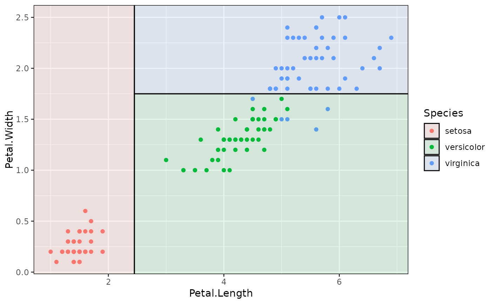
## To drop the black border lines (i.e. fill only)
p + geom_parttree(data = iris_tree, aes(fill = Species), col = NA, alpha = 0.1)
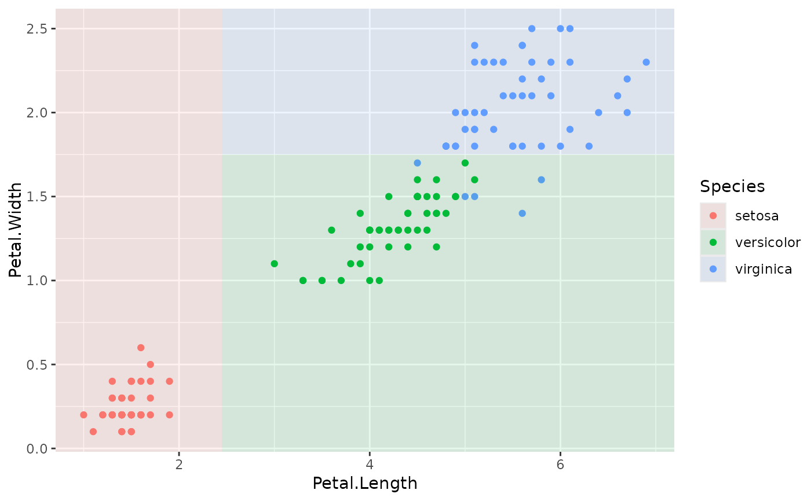
### Example with plot orientation mismatch
p2 = ggplot(iris, aes(x=Petal.Width, y=Petal.Length)) +
geom_point(aes(col=Species))
## Oops
p2 + geom_parttree(data = iris_tree, aes(fill=Species), alpha = 0.1)
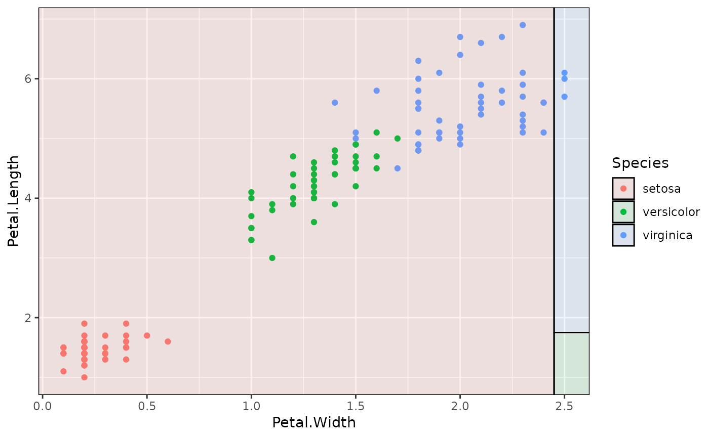
## Fix with 'flip = TRUE'
### Various front-end frameworks are also supported, e.g.:
# install.packages("parsnip")
library(parsnip)
iris_tree_parsnip = decision_tree() |>
set_engine("rpart") |>
set_mode("classification") |>
fit(Species ~ Petal.Length + Petal.Width, data=iris)
p + geom_parttree(data = iris_tree_parsnip, aes(fill=Species), alpha = 0.1)
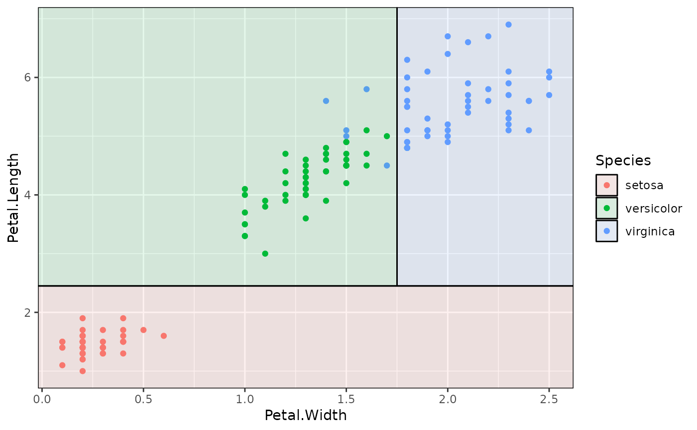
### Trees with continuous independent variables are also supported. But you
### may need to adjust (or switch off) the fill legend to match the original
### data, e.g.:
iris_tree_cont = rpart(Petal.Length ~ Sepal.Length + Petal.Width, data=iris)
p3 = ggplot(data = iris, aes(x = Petal.Width, y = Sepal.Length)) +
geom_parttree(
data = iris_tree_cont,
aes(fill = Petal.Length), alpha=0.5
) +
geom_point(aes(col = Petal.Length)) +
theme_minimal()
## Legend scales don't quite match here:
p3
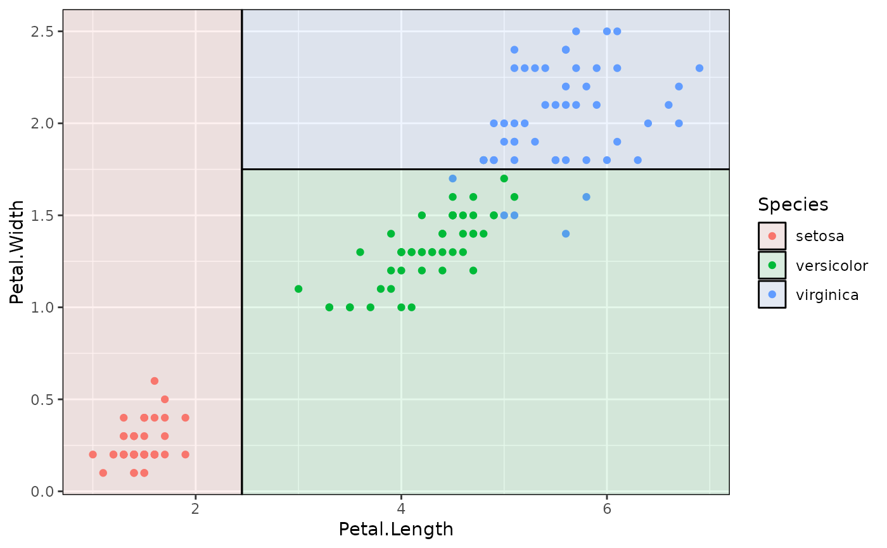
## Better to scale fill to the original data
p3 + scale_fill_continuous(limits = range(iris$Petal.Length))
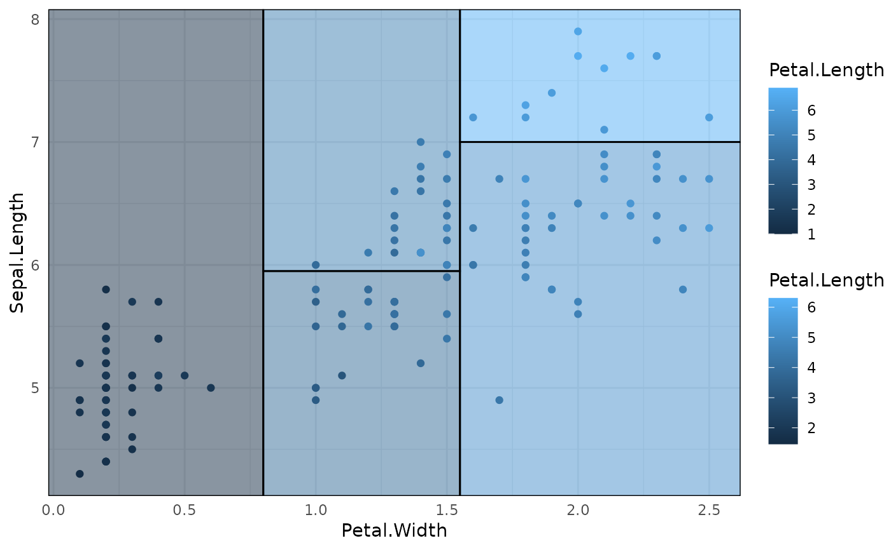
## Better to use fill and highlight predictions
p + geom_parttree(data = iris_tree, aes(fill = Species), alpha=0.1)
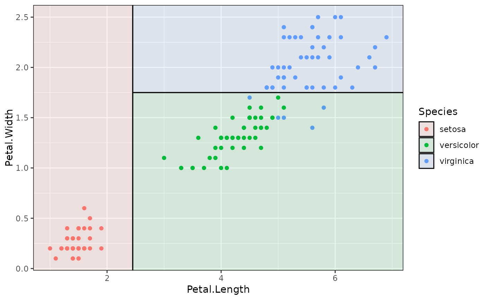
## To drop the black border lines (i.e. fill only)
p + geom_parttree(data = iris_tree, aes(fill = Species), col = NA, alpha = 0.1)
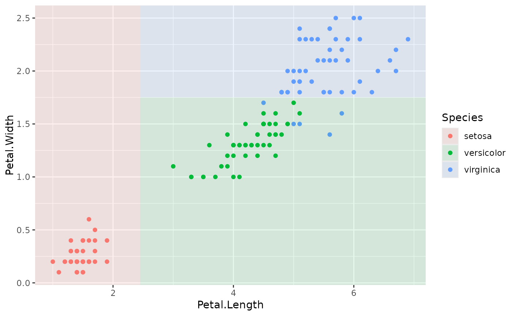
### Example with plot orientation mismatch
p2 = ggplot(iris, aes(x=Petal.Width, y=Petal.Length)) +
geom_point(aes(col=Species))
## Oops
p2 + geom_parttree(data = iris_tree, aes(fill=Species), alpha = 0.1)
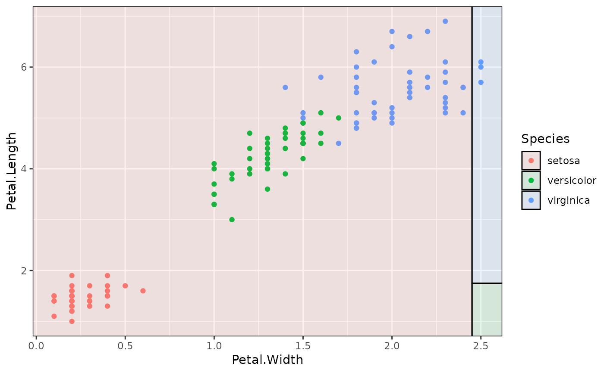
## Fix with 'flip = TRUE'
### Various front-end frameworks are also supported, e.g.:
# install.packages("parsnip")
library(parsnip)
iris_tree_parsnip = decision_tree() |>
set_engine("rpart") |>
set_mode("classification") |>
fit(Species ~ Petal.Length + Petal.Width, data=iris)
p + geom_parttree(data = iris_tree_parsnip, aes(fill=Species), alpha = 0.1)
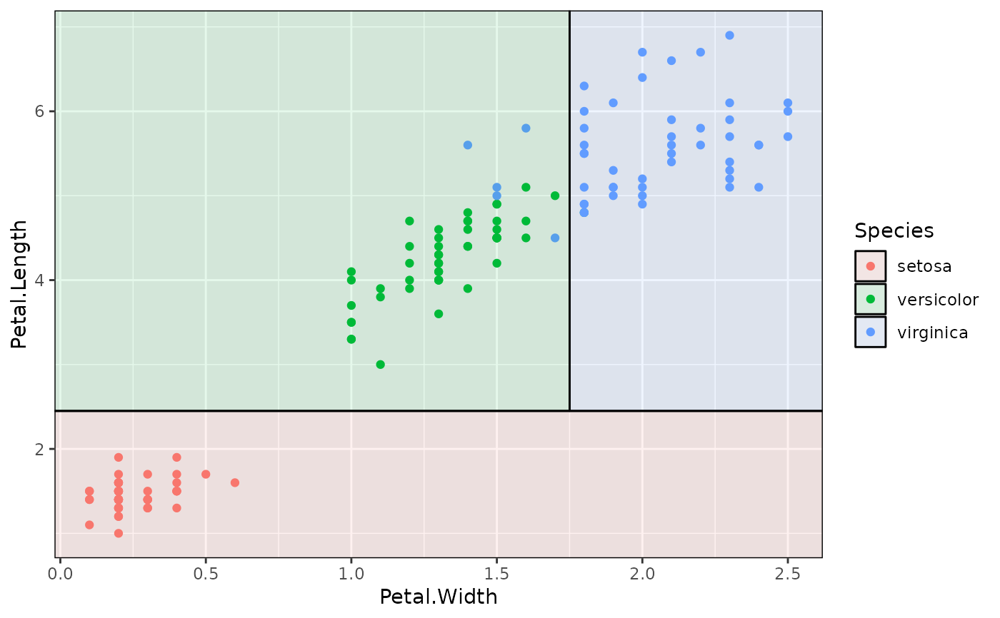
### Trees with continuous independent variables are also supported. But you
### may need to adjust (or switch off) the fill legend to match the original
### data, e.g.:
iris_tree_cont = rpart(Petal.Length ~ Sepal.Length + Petal.Width, data=iris)
p3 = ggplot(data = iris, aes(x = Petal.Width, y = Sepal.Length)) +
geom_parttree(
data = iris_tree_cont,
aes(fill = Petal.Length), alpha=0.5
) +
geom_point(aes(col = Petal.Length)) +
theme_minimal()
## Legend scales don't quite match here:
p3
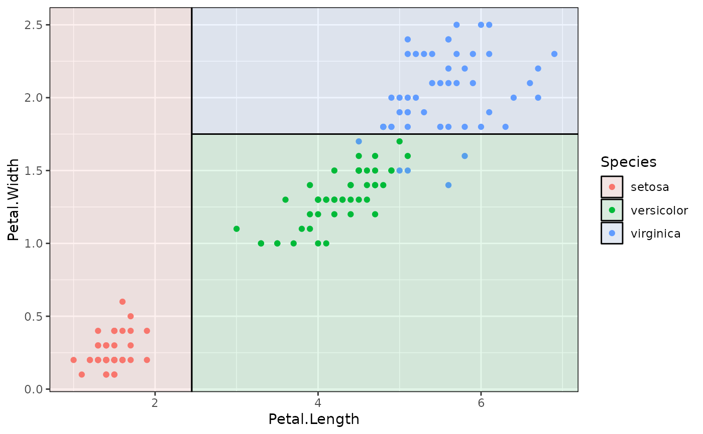
## Better to scale fill to the original data
p3 + scale_fill_continuous(limits = range(iris$Petal.Length))
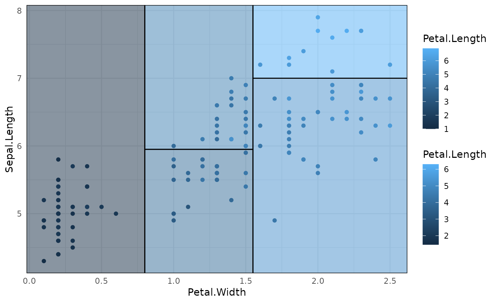